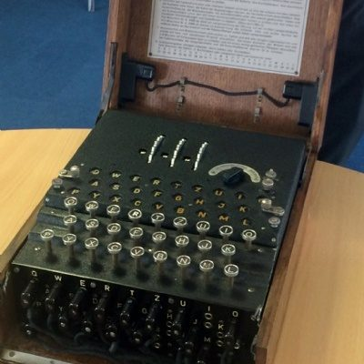

The Imitation Game
If a machine can imitate a soul convincingly, what exactly was the soul doing?

The Imitation Game
If a machine can imitate a soul convincingly, what exactly was the soul doing?
Feature map
Level-by-level features, as the figure refined them.
The Bombe
Passive.
- Observation and Imitation as above. - Elimination (passive): your Observation check gains a +2 bonus against a feature you have seen activated 3 or more times — the cipher breaks with repetition.
Stored Program
Passive · Rapid Execution — Bonus action · 2 CE.
- Observation becomes more efficient: you may Observe as a free action once per round (no reaction required), still costing 1 CE. - Rapid Execution (Bonus Action, 2 CE): activate a stored imitation as a bonus action instead of an action. Once per round.
Universal Machine
Passive.
- Cross-Compilation (passive): your imitation penalties lessen — damage dice are now reduced only on a d12→d10 step (all other dice unchanged), and the save DC penalty drops to −1. - The Halting Problem (structural clause): there is always exactly one model in your store designated uncomputable — the GM chooses secretly (see NPC mechanics). It cannot be imitated, and attempting to do so wastes the action but not the CE. There is always one technique he cannot complete. He doesn't know which until he tries.
The Test
The Interrogator — Action · 8 CE · Passive.
- The Interrogator (Action, 8 CE): force the question on one creature within 60 ft — it makes an INT save vs your DC. On failure, for 1 minute, you may use your reaction once per round to force the target to reroll one attack roll or saving throw it makes for a technique feature, using the lower result. I have modeled you. I know where you hesitate. On success, the target is immune for 24 hours. - Your stored capacity increases to PB + 2 models.
Core Mechanic — Observe, Model, Imitate
Observation — Reaction · 1 CE · Imitation — Action · 3 CE.
Tier IV · Utility Caster · Suggested CE ability: INT · Primary verb: Compute. Technique DC = 8 + proficiency bonus + INT modifier. Observation requires line of sight; imitation requires a stored model.
- Observation (Reaction, 1 CE): when you see a creature within 60 ft activate a technique feature, spell, or comparable named ability, make an INT check vs DC 8 + the target's PB + the target's CE ability modifier (if the target has no CE ability, use its spellcasting or primary ability modifier instead; if it has none, the DC is 8 + the target's PB) (invented fallback). On success, you record a model: the feature's name, action cost, CE cost, range, and effect summary. You can store up to your PB in models. Recording a new model beyond capacity discards the oldest. - Imitation (Action, 3 CE): activate one stored model as an imperfect copy: - Damage dice are reduced one step (d12→d10→d8→d6→d4). - Save DC is reduced by 2. - Targets reduced by one and area dimensions reduced by 5 ft (minimum 5 ft) (invented: 5 ft); durations halved (minimum 1 round). - You pay the model's CE cost or 3 CE, whichever is higher. - Cannot imitate: Domain Expansions, Maximums / Maximum Outputs, Simple Domains, or any feature the GM has designated uncomputable (see NPC mechanics). Attempting to model one of these automatically fails the Observation check.
Maximum, Domain, or equivalent.
Capstone material.
Domain Expansion: Church–Turing Thesis
- Domain Expansion (Full-turn Action, 20 CE): "Domain Expansion: Church–Turing Thesis." A disclosed rule-Domain, 60-ft radius. Sure-hit — "The Observed Cipher": every hostile inside is automatically Observed — no check, no reaction — whenever it activates a technique feature, spell, or named ability. Turing may Imitate any stored model as a reaction (instead of an action) while inside, at −1 CE cost. - Clash points: 800 · Burnout: 5 rounds · Duration: 2 minutes · Barrier per standard formula. Inside his domain, everyone's technique becomes his. The sure-hit doesn't wound you. It reads you. - Thesis Defense (passive): while the Domain persists, Turing's own technique features cannot be Observed or imitated by others — the thesis is not subject to itself.
- Clash points
- 800
- Burnout
- 5 rounds
- Duration
- 2 minutes
- Radius
- 60-ft radius
- Activation ✦
- full-turn action
- CE cost ✦
- 20
✦ Canon: figure Domains are Specific Domains — the stated profile governs, not the player point-unlock table.
The Imitation Perfected (Capstone)
- Sixty Seconds of Soul (Action, 12 CE, once per long rest): for 1 minute, one stored imitation runs at full efficacy — no dice reduction, no DC penalty, no target reduction. The copy is exact. - The price of perfection: when the minute ends, the model is erased permanently — it can never be stored again — and Turing suffers one level of exhaustion that cannot be removed until he completes a long rest. The machine proved it could hold a soul for sixty seconds. The holding broke something. The 27% — the interesting part — was not in the copy. It was in the breaking.
Build-defining options.
Historical-figure techniques grant no feats — the figure's art is complete as written, and the builder's feat picker excludes these techniques. Take the progression as the build.
Edge cases and shared systems.
Campaign canon notes